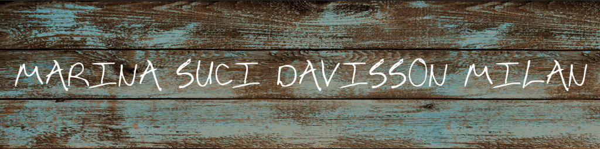

LinkedIn
Video Editting
EDUCATION
Connecticut College, New London, CT BA, May 2017 iiiii
Major, Minor: Computer Science, Environmental Studies
AIT-Budapest, Budapest, Hungary Spring 2016
Program Subject: Computer Science
Arlington High School, Arlington, MA Fall 2009 - Spring 2013
TECHNICAL SKILLS
Languages: Python, Java, JavaScript, HTML/CSS
Applications: Microsoft Office, Little Green Light, QuickBase, Adobe Premiere, Camtasia
WORK EXPERIENCE
The Office of Sustainability, Connecticut College, New London, CT Fall 2016 - Spring 2017
Senior Resource Management Fellow
• Worked on a team of 8 senior fellows to run the Office while without a director
• Further developed and led our campus’ end of year donation/distribution program
• Worked with Food System’s Fellow to hold events about the lifecycle of food
• Organized e-waste collection and recycling on campus
• Participated in strategic planning for the future of the Office
Connecticut College Department of Computer Science, New London, CT Fall 2015 – Spring 2017
Teaching Assistant, Grader, and Certified CRLA Tutor
• Learned to ask the right questions to allow students to arrive at their own answers
• Helped students work through errors and gave them the tools to resolve these
issues on their own in the future
• Improved my ability to interpret and fix code through testing and grading projects
• Continued to develop my own understanding of and fluency in Python
The Data Collaborative, Arlington, MA Summer 2013, Summer 2014, Summer 2015
Intern
• Created and managed database systems using Intuit QuickBase
• Worked to consolidate large amounts of data to reveal what was most important
• Utilized Microsoft Excel to perform calculations and analysis on large data sets
• Followed instructions to learn and teach colleagues new software
• Created a web based and mobile time card application
• Conceived of ways to more efficiently complete large tasks
• Helped other employees to solve technological issues
• Utilized Intuit QuickBooks
• Utilized Camtasia to make tutorial and promotional videos for various products
Food Link, Arlington, MA January 2018 - Present
Data/Database Consultant
• Learned and utilized Little Green Light database software
• Scrubbed and consolidated large data sets
The Dance Inn, Lexington, MA September 2009 - April 2013
Assistant Dance Teacher
• Worked under a superior and learned to anticipate needs
• Learned more about working with children ages 3-10
• Practiced how to teach with respect and patience
Anne Westcott L.I.C.S.W., Concord, MA January 2015
Consultant
• Learned about TherepyNotes.com
• Analyzed and organized data
• Learned about HIPPA and other such forms
Math Tutor, Arlington, MA Fall 2012 – Spring 2013
Volunteer
• Aided geometry student in applying concepts that she has learned in her course
• Provided student with tools to use to solve similar problems on her own in the future
Arlington Community Media, Inc., Arlington, MA Fall 2017 – Present
Volunteer Video Editor and Director
• Learned and utilized Adobe Premiere video editing software
• Directed shoots for ACMi show Living Out Loud
LEADERSHIP EXPERIENCE
The Office of Sustainability, Connecticut College
Senior Fellow for Resource Management Fall 2016 - Spring 2017
Sustainable Food Systems Fellow Fall 2014 - Fall 2015
• Developed and ran a program to facilitate the separation of food waste at large campus events
• Worked with Dining Services and PEEPS on student outreach and education about food in the dining hall
• Wrote grants and received funding for various food waste disposal and equipment acquisition projects
• Mentored a junior fellow interested in food systems
Sustainability Representative Fall 2013 - Spring 2014
• Designed a composting plan for off campus housing
• Wrote grant and acquired funding for a campus housing composting program
• Addressed problems during grant writing process
• Presented to the Student Government Association
• Worked with various offices on campus
Women in Stem Day at Connecticut College, New London, CT Fall 2016, Spring 2017
Volunteer
• Aided high school students in learning basic concepts of coding
• Practiced talking about how to formulate code conceptually without considering syntax
• Helped students learn to utilize problem solving skills to complete a task
• Participated on a panel in which we discussed being a woman in tech
PEER-REVIEWED CONFERENCE PAPERS
Ananya Christman, Christine Chung, Nicholas Jaczko,
Marina Milan, Anna Vasilchenko, and Scott Westvold.
Revenue Maximization in Online Dial-A-Ride.
17th Workshop on Algorithmic Approaches for Transportation Modeling,
Optimization, and Systems (ATMOS 2017). September 2017.